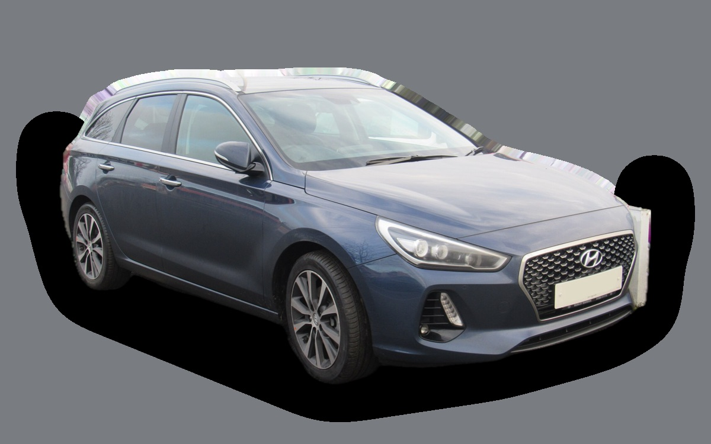

Vad kostar en Hyundai i30 Kombi per månad?
En Hyundai i30 Kombi från 2022 kostar cirka 3 042 kr i månaden, allt inräknat.
3 042 krper månad, årsmodell 2022
176 000 krpris, årsmodell 2022
264 900 krsenaste nypris
Bprisvärdhetsbetyg (2022)


Månadskostnad per årsmodell
| Årsmodell | Version i beräkningen | Pris | Per månad | Betyg |
|---|---|---|---|---|
| 2025 | 1.0 T-GDi 100 manuell, Essential | 246 000 kr | 3 719 kr | C |
| 2022 | 1.0 T-GDi 100 manuell, Essential | 176 000 kr | 3 042 kr | B |
| 2019 | 1.0 T-GDi 100 manuell, Essential | 134 000 kr | 2 834 kr | B |
Räknat på 5 års ägande och 1 250 mil per år, med bränslepriser från 2026-10-22. Månadskostnaden innehåller värdeminskning, drivmedel, service och reparationer, försäkring och fordonsskatt.
Så fördelas kostnaden för en 2022:a
- Värdeminskning: 1 022 kr/mån
- Drivmedel: 1 164 kr/mån
- Service och reparationer: 456 kr/mån
- Försäkring: 344 kr/mån
- Fordonsskatt: 56 kr/mån
Begagnatpriser i annonser
| Årsmodell | Medianpris | Annonser | Typiskt miltal |
|---|---|---|---|
| 2025 | 239 900 kr | 6 | 2 400 mil |
| 2023 | 209 900 kr | 6 | 6 100 mil |
| 2022 | 199 000 kr | 7 | 5 300 mil |
| 2021 | 179 900 kr | 12 | 7 100 mil |
| 2020 | 164 400 kr | 17 | 9 600 mil |
| 2019 | 152 400 kr | 7 | 9 200 mil |
| 2018 | 139 700 kr | 14 | 12 700 mil |
| 2017 | 116 000 kr | 19 | 14 700 mil |
Medianpriset i svenska annonser per årsmodell i oktober 2026 (källa: Blocket, AutoUncle). Annonspriser är utgångspriser, och slutpriset kan bli lägre.
Motorer och versioner
| Motor | Drivmedel | Effekt | 0–100 km/h | Förbrukning (WLTP) | Räckvidd | Årsmodeller | Pristillägg |
|---|---|---|---|---|---|---|---|
| 1.0 T-GDi 100 manuell | Bensin | 100 hk | 12,5 s | 5,4 l/100 km | – | 2017–2025 | – |
| 1.0 T-GDi DCT | Bensin | 100 hk | 12,8 s | 5,6 l/100 km | – | 2017–2025 | +15 000 kr |
| 1.6 CRDi 136 | Diesel | 136 hk | 10,3 s | 4,6 l/100 km | – | 2017–2020 | +20 000 kr |
| 1.5 T-GDi 140 DCT | Bensin | 140 hk | 9,8 s | 5,8 l/100 km | – | 2021–2025 | +55 000 kr |
- Utrustning: Essential, Advanced (+15 000 kr)
Fakta
- Kaross
- Kombi
- Årsmodeller
- 2017–2025
- Senaste nypris
- 264 900 kr
- Bagage
- 602 liter
- Euro NCAP
- 5 av 5 stjärnor
- Nybilsgaranti
- 5 år
- Driftsäkerhet
- 4 av 5
- Helförsäkring, uppskattning
- 5 600 kr/år
- Service, uppskattning
- 3 500 kr/år
Vanliga fel att ha koll på
- Dubbelkopplingslåda (7DCT), reparation cirka 22 000 kr
- Sot på insugsventiler och kamkedja (T-GDI), reparation cirka 9 000 kr
Felen gäller vissa motorer och årsmodeller. I kalkylatorn räknas risken för just den version du väljer.
Fördelar och nackdelar
Fördel
Rymlig och prisvärd kombi med fem års garanti.
Nackdel
Tillverkas inte längre och har ingen hybrid.
Liknande bilar
 Skoda Octavia Kombi III3 048 kr/mån som 2017:a
Skoda Octavia Kombi III3 048 kr/mån som 2017:a Ford Mondeo Kombi3 027 kr/mån som 2019:a
Ford Mondeo Kombi3 027 kr/mån som 2019:a- Bild saknasToyota Avensis Touring Sports3 072 kr/mån som 2015:a
 Toyota Corolla Touring Sports2 951 kr/mån som 2023:a
Toyota Corolla Touring Sports2 951 kr/mån som 2023:a Volvo V503 160 kr/mån som 2009:a
Volvo V503 160 kr/mån som 2009:a- Bild saknasSeat Leon Sportstourer3 166 kr/mån som 2023:a
Uppdaterad 2026-10-27 · annonsdata okt 2026